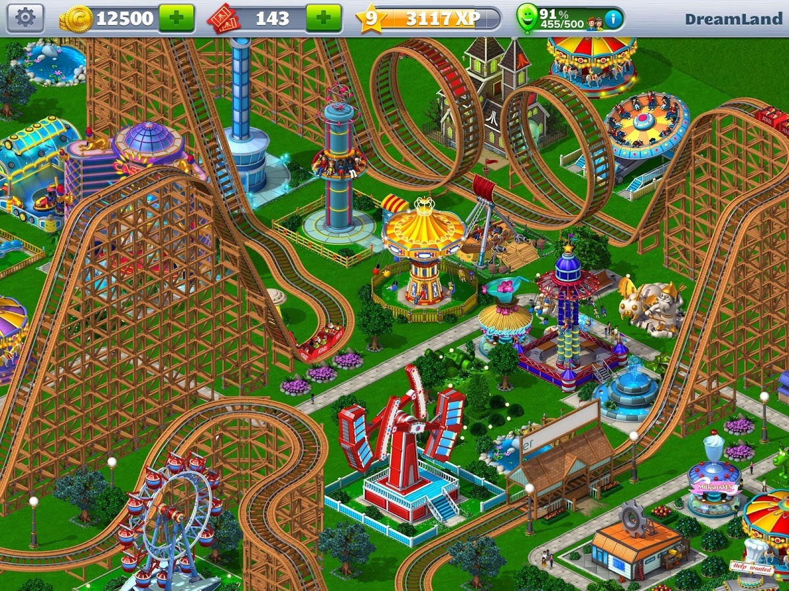

https://play.google.com/store/apps/details?id=com.atari.mobile.rct4m

http://www.mobygames.com/game/rollercoaster-tycoon/cover-art/gameCoverId,362/
RollerCoaster Tycoon is a construction and management simulation video game that simulates amusement park management. Developed by MicroProse and Chris Sawyer and published by Hasbro Interactive, the game was released for Microsoft Windows on March 31, 1999 and was later ported to the Xbox game console. It is the first game in the RollerCoaster Tycoon series.